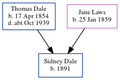

Sidney Robert Dale 1891 -
[ Home ] | [ Calendar ] | [ Surnames Index ] | [ Census Index ] | [ Family History ]A cooper cement works and the child of Thomas Dale (a dock yard laborer) and Jane Laws, Sidney Dale, the second cousin three-times-removed on the father's side of Nigel Horne, was born in Strood, Kent, England in 18911.
During his life, he was living on Brompton Lane in Strood on Mar 31, 19011 and on Apr 2, 19112.
Parents
- Thomas Henry was born on Apr 17, 1854
- Jane was born on Jan 25, 1859
Citations
- 1901 England, Wales & Scotland Census - Findmypast (was age 10 and the son of the head of the household)
- 1911 Census for England & Wales - Findmypast (was age 19 and the son of the head of the household)
Family Tree
Generated by ged2site. Last updated on Jun 11, 2024